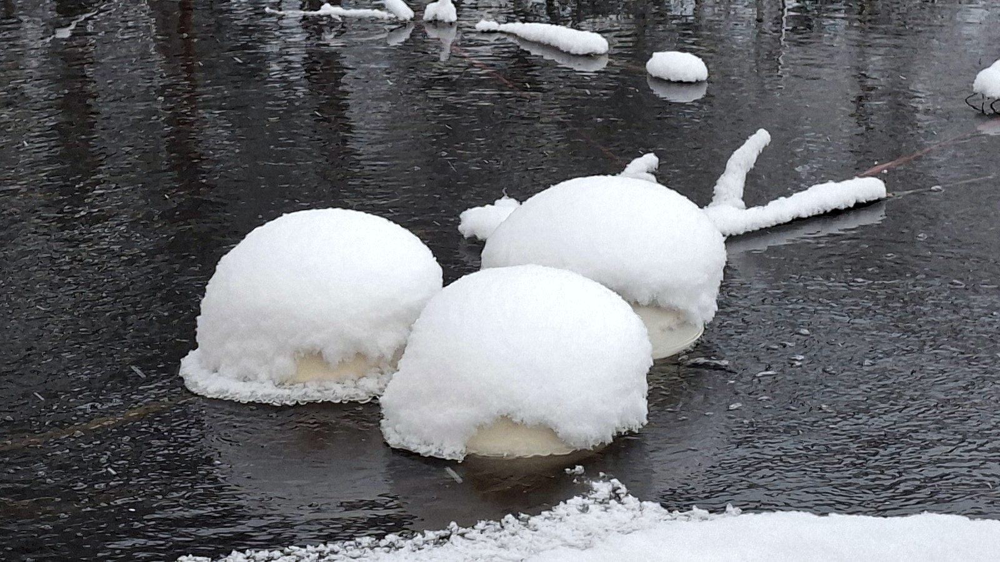

Hiilikrediitit · ennallistamiskrediitit · mitattu sedimentistä
Useimmat krediitit ostetaan mallin perusteella. Meidän alkavat järven pohjalta.
Rappeutunut vesistö päästää. Palauta happi sedimenttiin ja se lakkaa — ja tuo muutos voidaan mitata siinä paikassa jossa se tapahtuu, ei päätellä taulukkolaskennasta. OceanSite muuttaa tuon mitatun muutoksen kahdeksi instrumentiksi: hiilikrediitiksi ja ennallistamiskrediitiksi.
Kaksi instrumenttia, yksi toimenpide
Hiilikrediitit
Hapeton sedimentti tuottaa metaania. Syvänteen hapetus poistaa olosuhteet jotka sitä tuottavat. Vältetty päästö on krediitoitava määrä.
Ennallistamiskrediitit
Sama toimenpide tuottaa dokumentoidun ekologisen elpymisen — sen yksikön, jota luonnonennallistamis- ja monimuotoisuuskehykset on rakennettu ostamaan.
Kolme asiaa, tässä järjestyksessä
Lähtötaso
Ennen kuin mitään asennetaan, syvänne mitataan. Ilman dokumentoitua lähtötasoa ei ole krediitoitavaa muutosta — vain parannus jota kukaan ei voi hinnoitella.
Hapetus
Putkessa tapahtuva OxTube-hapetus toimittaa kaasua syvyyteen. Ei pyöriviä osia vedessä; toimii jään alla kun se on suunniteltu kohteeseen.
Todentaminen
Jatkuva ja näytteenottoon perustuva seuranta lähtötasoa vasten, raportoituna osapuolelta joka ei ole toimittaja. Toimittajan itsensä allekirjoittama krediitti ei ole krediitti.
Mitä mittasimme Rekilammella
Riippumattomasti mitattu Pohjanläheinen happi nousi vuonna 2026 tasolle 0,28–0,36 mg/l, kun lähtötaso oli noin 0,0–0,1 mg/l. Mittaukset Karelia-ammattikorkeakoulun tekemiä. Koko referenssi →

Hapetus jatkuu jään alla kun yksikkö on suunniteltu kohteeseen.
Kenelle tämä on
Krediitin ostajat
Yritykset ja rahastot, jotka etsivät poistoyksiköitä ja luontoyksiköitä joiden alkuperä on fyysinen, paikannettavissa ja uudelleen mitattavissa.
Kunnat
Vesistöt, joissa on hajuvalituksia, kalakuolemia tai lupaan liitetty kunnostusvelvoite — joissa krediitti voi kantaa osan kustannuksesta.
Vesialueen omistajat
Yhteisomistuksessa olevat järvet ja lammet, joiden omistajat haluavat kunnostuksen rahoitettavan sen luomalla arvolla.
Teollisuuskohteet
Purkuvesistöt, jäähdytysaltaat ja lammikot, joissa purkuehdot on joka tapauksessa osoitettava.
Yksi ryhmä, yksi näyttöketju
Krediitti on täsmälleen sen mittauksen arvoinen joka on sen takana, ja mittaus on sen käsittelyn arvoinen jota se kuvaa. Nämä kolme vaihetta ostetaan tavallisesti kolmelta toimittajalta, jolloin näyttö vaihtaa omistajaa kahdesti — ja juuri noissa luovutuksissa ostajan tekninen neuvonantaja alkaa kysellä. Täällä kolmella yhtiöllä on samat omistajat.
Käsittely
SansOx Oy toimittaa virtaukseen tulevan raudan: OxTube-liuotinyksiköt, putket ja pumput. Tämä on se vaihe joka muuttaa veden.
Mittari
SpringNet Solutions Oy toimittaa ohjausohjelmiston, anturit ja jatkuvan datan. Se tallentaa mikä muuttui — ja säilyttää tallenteen.
Sertifiointi
OceanSite Oy — tämä yhtiö — muuttaa dokumentoidun muutoksen välineeksi, jonka ostaja voi pitää kädessään: hiilikrediitiksi tai ennallistamiskrediitiksi.
Kolme yhtiötä on rekisteröity erikseen. Ryhmällä ei ole julkistettua emoyhtiötä eikä yhteistä toiminimeä vielä, eikä sellaista väitetä tällä sivulla.
Aloita lähtötasosta, ei laitteistosta.
Yksi vesistö, yksi dokumentoitu lähtöpiste. Jokainen sen jälkeen tuleva instrumentti rakentuu sen varaan.
Aloita lähtötasosta